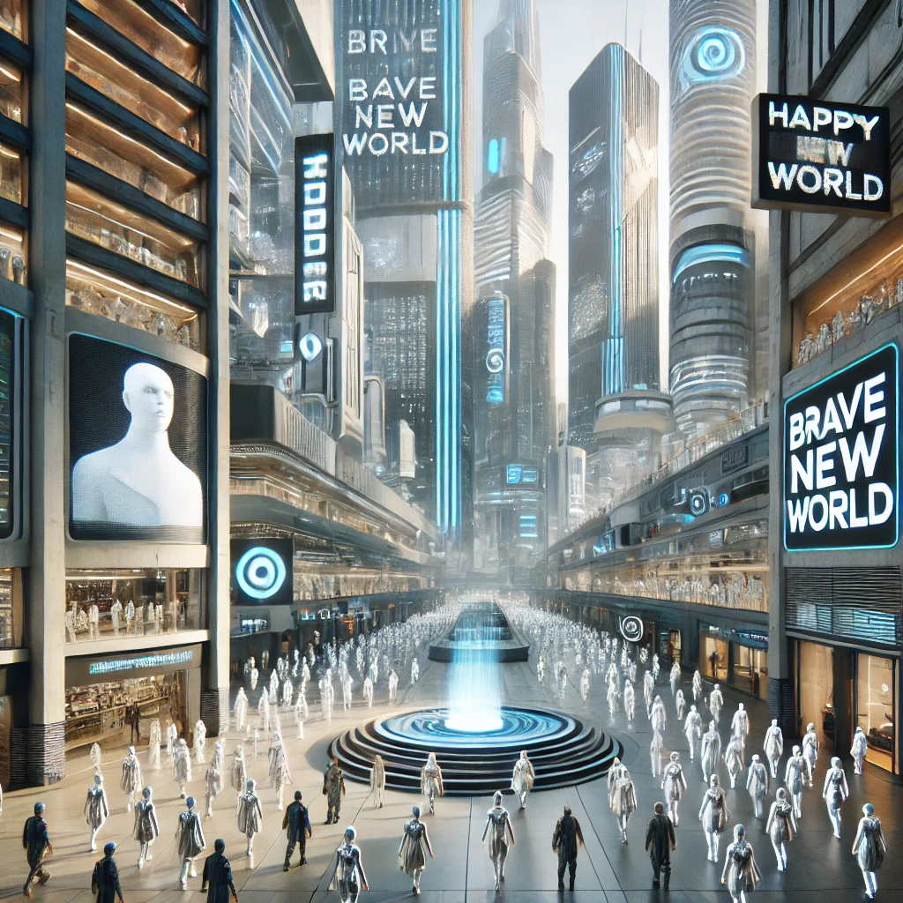

멋진신세계
목차
작가
올더스 헉슬리
출판일
1932년
감상평에 대한 AI그림
태어날 때부터 자신의 계급이 정해지고 인공적으로 태어나는 게 정상인 세계. 사람들은 소마라는 약을 통해 불행에서 벗어나며 자신의 계급에 따라 일이 정해져 있는 세계. 이러한 세계를 통해 미래 사회의 과학과 기술 등이 사람의 감정과 자유를 억압할 수 있는지를 잘 나타낸 소설인 것 같다.

감상평에 대한 AI평가
작성하신 감상평은 『멋진 신세계』의 핵심적인 내용을 잘 담고 있습니다.
✨ 『멋진 신세계』의 주요 설정(계급 사회, 인공 출생, 소마, 감정과 자유의 억압)을 정확하게 짚었습니다.
✨ 작품이 전달하는 핵심 메시지(과학과 기술이 인간성을 억압할 가능성)를 잘 정리했습니다.
✨ 단순한 미래 기술의 발전이 아니라, 그것이 인간의 감정과 자유를 억압할 가능성에 대한 문제를 짚었다는 점이 돋보입니다.